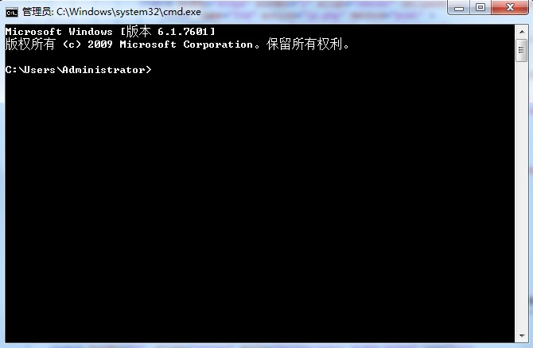
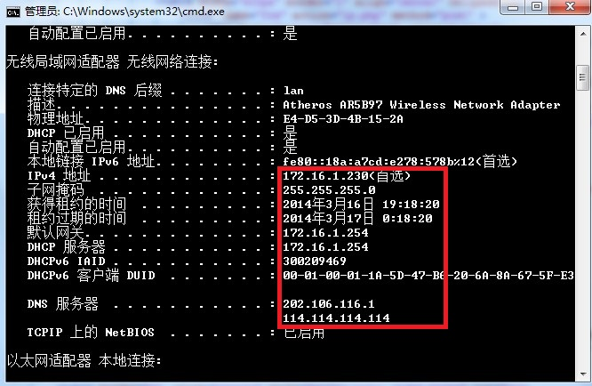
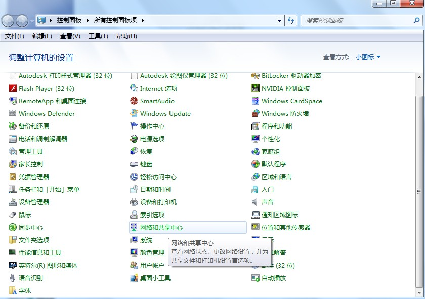
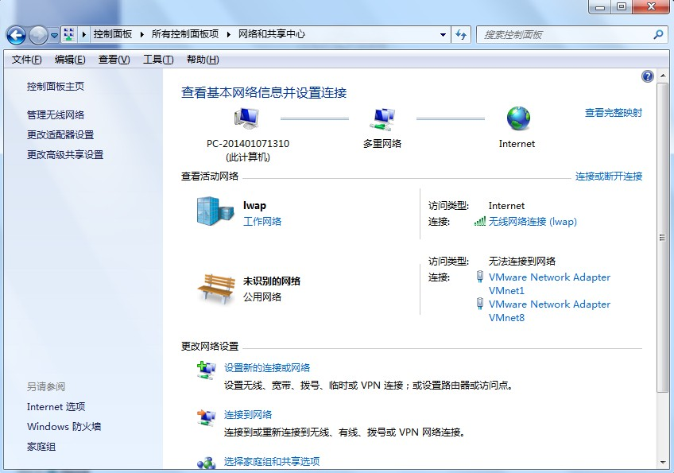
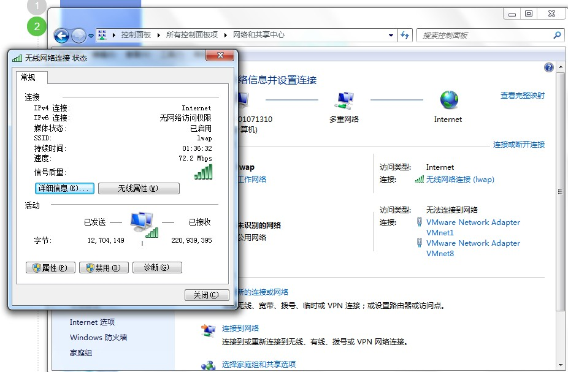
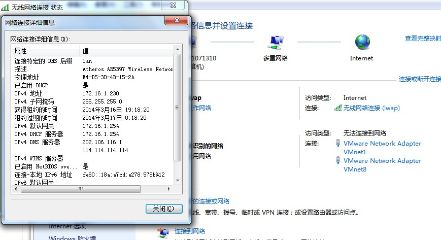
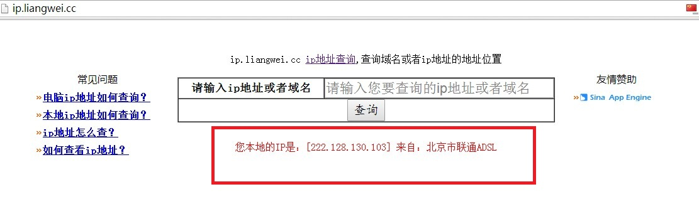

很多网友不知道怎么查看自己电脑的IP地址,给大家分享几种方法.
方法一：
1.点击你的电脑桌面左下角的“开始”找到“运行”点击运行（或者直接按键盘上的win+r快捷按键）,如图1

图1
2.在出现的对话框里面输入“cmd” 点击确定然后就会出现一个黑色的命令行窗口,你会看到“>” 后面有一个光标在闪动,如图2

图2
3.输入ipconfig /all 然后按下回车键,找到你要查询的网卡，就可以看到（红色框内的）ip地址、子网掩码、网关、dns了。如图3

图3
备注：因为我的电脑没有使用本地连接，用的无线所以就看无线网卡的信息了。如果你电脑使用网线连接本地的网卡，只需要找到本地以太网适配器 本地连接 就可以了。
方法二：
1.打开开始菜单,找到控制面板,在控制面板中找到"网络和共享中心"如图4

图4
2.点击进去找到你要查询的网卡，点击"连接:"后面的连接，如我的电脑无线网络连接（lwap），如图5

图5
3.点击之后出现"无线网络连接状态",如图6

图6
4.然后点击"详细信息"，就可以看到完整的ip信息了。如图7

图7
备注：
1.我的电脑是win7系统，xp系统的查看方式可以用第一种方法，是通用的。第二种方法xp也可以，只是个别的叫法或者名称不同。当然还有很多方法可以查看到电脑ip地址信息，这里就不一一介绍了。
2.特别需要注意的是，我们这里介绍的只是查看你的电脑本地的ip地址方法，大多数朋友看到的是私网地址，除非是你的电脑是运营商直接给你的ip地址就是公网的。如果大家想看你的电脑上网所使用的公网地址。那么可以在本站首页查看到。（图中红色框内显示的就是你的电脑上网的外网地址，也就是公网地址。）如图8

图8
如果大家还有什么疑问可以给我发邮件。